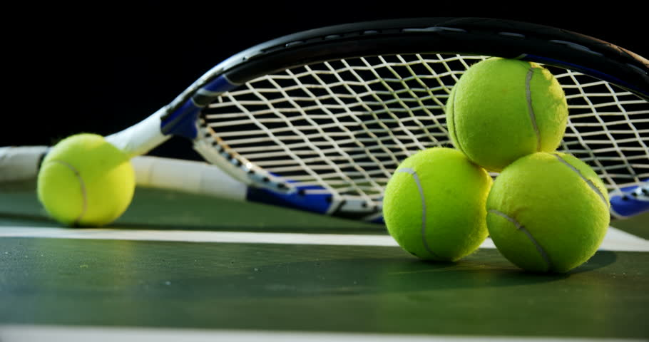
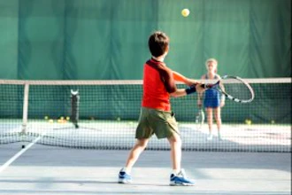
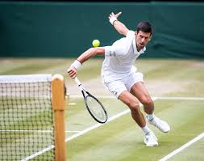

Tennis is the sport well-known in the world, is a racket sport that can be played individually against a single opponent (singles) or between two teams of two players each (doubles). Each player uses a tennis racket that is strung with cord to strike a hollow rubber ball covered with felt over or around a net and into the opponent's court. The object of the game is to maneuver the ball in such a way that the opponent is not able to play a valid return. The player who is unable to return the ball will not gain a point, while the opposite player will.
My first time meeting with the sport was at the age of 6 because of my parents who wanted me to be active. At first I didn't enjoy playing it but after time it started to grow on me. After two years of training I was feeling confident of my skills and I started to play tournaments.
After I decided to start participating in tournaments I started to enjoy the sport even more and after playing on my clubs courts I got an invitation to play away. How could I say no to that, so I packed and went to win the tournament with my parents in Truskavets at that time I was 9 years old. Down below you can see some of my tournaments and where did I place in them:
| Cities | Place |
|---|---|
| Truskavets | 1st |
| Kraków | 2nd |
| Kraków | 1st |
| Szczecin | 2nd |
| Niepołomice | 1st |
| Krzeszowice | 3rd |
Ever since I got interested in Tennis I started watching other tennis players play and the one player I found inspiiring was Novak Djokovic. He is a Serbian professional tennis player who is currently ranked world No. 1 in men's singles tennis by the Association of Tennis Professionals. He inspired me to become better and to play with your mind and not muscle.
